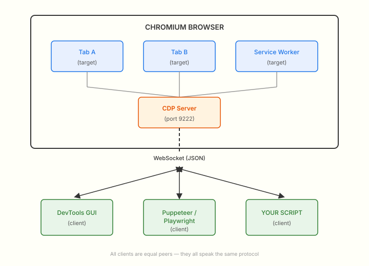

Lesson 1
What Is the Chrome DevTools Protocol?
The Big Idea
You already use Chrome DevTools every day. You click "Inspect," browse the DOM, set breakpoints, profile network requests. But here's what you might not have considered: the DevTools GUI is just a client.
Behind that familiar UI is a protocol - a structured conversation between a client (DevTools, or any program) and the browser engine. That protocol is CDP: the Chrome DevTools Protocol.
When you click "Inspect Element" in DevTools, what actually happens is DevTools sends a JSON message over a WebSocket to the browser's rendering engine, asking it to highlight a node. The engine responds with data. Every single thing DevTools can do, it does via CDP. There is no secret back channel.[1]
The Architecture (Mental Model)
Here's the full picture. Burn this into memory - it's the single diagram you need for everything that follows:

The key actors:
- Targets - debuggable things inside the browser: pages (tabs), service workers, iframes, the browser process itself. Each is independently addressable.
- CDP Server - when Chrome launches with
--remote-debugging-port=9222, it exposes an HTTP+WebSocket server. This is the entry point. - Clients - anything that connects to that WebSocket and speaks JSON. DevTools is one client. Puppeteer is another. Your Node script can be another. They are all equal peers.
The Message Format
CDP uses a pattern similar to JSON-RPC. There are exactly three kinds of messages:[2]
1. Command (client → browser)
You send a command. It has an id (so you can match it to the response), a method (the thing you want to do), and optional params:
{
"id": 1,
"method": "Page.navigate",
"params": {
"url": "https://example.com"
}
}2. Response (browser → client)
The browser replies with the same id and either a result or an error:
{
"id": 1,
"result": {
"frameId": "ABC123",
"loaderId": "DEF456"
}
}3. Event (browser → client, no id)
The browser pushes events asynchronously. No id - these are fire-and-forget notifications:
{
"method": "Network.requestWillBeSent",
"params": {
"requestId": "req-789",
"request": {
"url": "https://example.com/api/data",
"method": "GET"
}
}
}id? It's a command/response pair. No id? It's an event. That's the entire protocol framing.
Domains: How the Protocol Is Organised
CDP groups its capabilities into domains - roughly 50 of them across two protocol files. Each domain is a namespace containing related commands and events. You'll recognise many instantly from your DevTools experience.[1]
Stable Domains
These are the production-ready, documented APIs:
Browser- browser-level management (windows, tabs, version info)Console- deprecated - use Runtime or Log insteadDebugger- JavaScript debugging (breakpoints, stepping, call stacks)DOM- DOM read/write operations (inspection, manipulation, search)DOMDebugger- breakpoints on DOM operations and eventsEmulation- emulate different environments (viewport, geolocation, media)Fetch- intercept and modify network requests at the fetch layerInput- synthetic mouse, keyboard, and touch eventsIO- input/output operations for streams produced by DevToolsLog- access to browser log entriesNetwork- track network activities (requests, responses, cookies, caching)Page- navigation, lifecycle, screenshots, PDF generationPerformance- performance metrics collectionProfiler- JavaScript CPU profilingRuntime- JavaScript evaluation, console, remote objectsSchema- deprecated - protocol schema informationSecurity- security state of the page (certificates, mixed content)Target- target discovery, attach/detach to pages, workers, etc.Tracing- Chrome tracing (low-level performance capture)
Experimental Domains
These are usable but may change without notice between Chrome versions:
Accessibility- accessibility tree inspectionAds- ad-related metrics and dataAnimation- animation inspection and controlAudits- page violations and improvement suggestionsAutofill- autofill form commands and eventsBackgroundService- background web platform features (push, sync, fetch)BluetoothEmulation- virtual Bluetooth device configurationCacheStorage- Cache API inspectionCast- Cast and Presentation API interactionCrashReportContext- crash report context API stateCSS- CSS read/write (computed styles, stylesheets, rules)DeviceAccess- device access permissionsDeviceOrientation- device orientation emulationDOMSnapshot- full document snapshots (DOM + layout + style)DOMStorage- localStorage/sessionStorage inspectionEventBreakpoints- breakpoints on native-code eventsExtensions- browser extension commands and eventsFedCm- Federated Credential Management dialog interactionFileSystem- file system accessHeadlessExperimental- headless-mode-only commandsHeapProfiler- heap snapshots and allocation trackingIndexedDB- IndexedDB inspectionInspector- inspector lifecycle eventsLayerTree- compositing layer inspectionMedia- media element inspection (video/audio)Memory- memory pressure simulation and reportingOverlay- drawing overlays atop the inspected pagePerformanceTimeline- performance timeline event reportingPreload- preloading/prefetch/prerender statusPWA- Progressive Web App controlsServiceWorker- service worker inspection and controlSmartCardEmulation- virtual smart card configurationStorage- storage quota, usage, and bucket inspectionSystemInfo- low-level system information (GPU, CPU)Tethering- browser port bindingWebAudio- Web Audio API inspectionWebAuthn- virtual WebAuthn authenticator configurationWebMCP- Model Context Protocol integration
Each domain has:
- Commands - things you ask the browser to do (request/response)
- Events - things the browser tells you happened (push notifications)
- Types - shared data structures used in commands and events
Most domains require explicit enablement. For example, you won't receive Network events until you send Network.enable. This keeps the protocol quiet by default - you only get what you ask for.
For the full list of every command, event, and type across all domains, see the CDP Complete Reference.
The Transport: How You Connect
The connection flow:
- Launch Chrome with remote debugging:
You need to run the browser's executable directly from the command line, passing the
--remote-debugging-portflag. The port number (9222 here) is not a fixed default - it's whatever you specify. 9222 is simply a community convention. If you omit the flag entirely, no debugging server starts. You can use any available port, which is useful for running multiple browser instances with CDP simultaneously.# macOS - Chrome /Applications/Google\ Chrome.app/Contents/MacOS/Google\ Chrome \ --remote-debugging-port=9222 # macOS - Brave /Applications/Brave\ Browser.app/Contents/MacOS/Brave\ Browser \ --remote-debugging-port=9222Windows & Linux equivalents
# Windows - Chrome "C:\Program Files\Google\Chrome\Application\chrome.exe" --remote-debugging-port=9222 # Windows - Brave "C:\Program Files\BraveSoftware\Brave-Browser\Application\brave.exe" --remote-debugging-port=9222 # Linux - Chrome google-chrome --remote-debugging-port=9222 # Linux - Brave brave-browser --remote-debugging-port=9222 - Discover targets via HTTP:
GET http://localhost:9222/json/listThis server is run by the browser instance you just launched - when Chrome/Brave starts with
--remote-debugging-port, it opens an HTTP+WebSocket server as part of its own process. You're talking directly to that browser. It responds with a JSON array of its open targets - each with awebSocketDebuggerUrl. - Connect via WebSocket to a specific target's URL:
ws://localhost:9222/devtools/page/ABC123DEF456 - Send commands, receive responses and events - all as JSON over that single WebSocket connection.
--remote-debugging-port flag. The CDP interface is identical. Brave's privacy shields (ad-blocking, fingerprint protection) run at a higher layer and don't interfere with the protocol itself - though they may affect what a page renders.
page.click(), it translates into a sequence of CDP commands (DOM.querySelector, Input.dispatchMouseEvent, etc.). Everything you learn here maps directly. Playwright uses CDP as its Chromium backend, but for Firefox and WebKit it uses its own patched protocol adapters - so it's a cross-browser abstraction layer, not purely a CDP wrapper. On Chromium, you can still drop to raw CDP via page.createCDPSession() for anything Playwright's high-level API doesn't expose.
chrome.devtools.panels, chrome.devtools.inspectedWindow.eval()) to add panels and communicate with the page. Extensions can access CDP via chrome.debugger.attach() if they need deeper protocol access, but most don't need to. The distinction:
- CDP directly (WebSocket) - external tools, automation, AI agents, CI pipelines
- Chrome Extensions API - adding custom panels/sidebars to the DevTools UI
- Extensions + CDP (
chrome.debugger) - extensions that need protocol-level access (e.g., network interception)
Targets and Sessions
One subtlety worth getting right early:
- A target is anything debuggable - a page, a service worker, an iframe, or the browser process itself.
- A session is your active connection to a specific target. It is scoped to that one target - commands you send and events you receive only relate to that target. To interact with a different tab, you need a different session.
The hierarchy:
- Browser instance → has many targets
- Target (tab, worker, browser) → you attach a session to it
- Session → scoped to that one target;
DOM.getDocumentin a session attached to Tab A gives you Tab A's DOM, not Tab B's
From a single browser instance launched with --remote-debugging-port=9222, you can connect to multiple targets in two ways:
- Separate WebSocket connections - each tab has its own
webSocketDebuggerUrl(from/json/list). Connect to each independently. Each connection is a session. - One connection, multiple sessions - connect to the browser-level WebSocket endpoint, then use
Target.attachToTargetto create child sessions to individual tabs over that single connection. This is how Puppeteer manages many tabs efficiently.
The browser-level endpoint (URL available via /json/version) gives you a root session for browser-wide commands (Browser.getVersion, Target.createTarget) and the ability to spawn child sessions attached to individual targets.[3]
How This Maps to What You Already Know
Next time you open DevTools, try this mental exercise:
| You do this in DevTools… | Under the hood, CDP sends… |
|---|---|
| Click "Elements" tab | DOM.getDocument |
| Set a breakpoint | Debugger.setBreakpointByUrl |
| Throttle network to "Slow 3G" | Network.emulateNetworkConditions |
| Run code in Console | Runtime.evaluate |
| Take a screenshot | Page.captureScreenshot |
There's a built-in tool to prove this to yourself: the Protocol Monitor. Open DevTools, then open DevTools-on-DevTools (Cmd+Shift+I while DevTools is focused), and enable the Protocol Monitor panel. You'll see every CDP message flying back and forth in real time.[4]
Check Your Understanding
Q1: What distinguishes a CDP event from a command response?
id fieldQ2: What is the DevTools GUI, in CDP terms?
Q3: Why do most CDP domains need explicit enablement?
Primary Source
Read next: The official Chrome DevTools Protocol documentation. Browse a few domains - Page, Network, Runtime - and notice the pattern: each lists commands (with parameters and return types) and events (with parameters). Don't memorise anything; just confirm that the structure matches the mental model above.